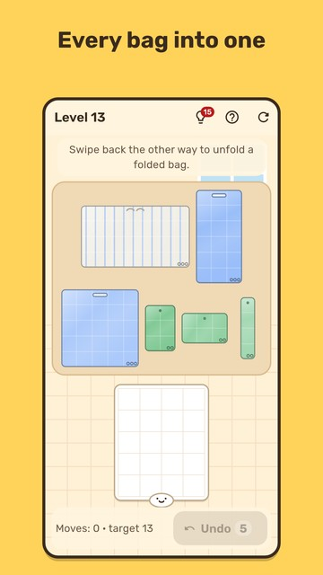

Bag of Bags
Every home has that one bag full of bags. Now it's a game!
There's a pile of plastic bags on the table, and every single one must fit into one bag. Fold, roll and nest bags inside each other, and enjoy the satisfying crinkle.

- A cozy puzzle: simple rules, clever levels. Fold first or nest first? Your call.
- All kinds of bags: T-shirt bags with handles, paper, gift, torn, wet and extra-crinkly ones.
- 240 levels: kitchen, pantry, country house, moving day, a quiet night with a sleeping cat and New Year.
- Bags from childhood: collect 60 retro patterns.
- Crinkle therapy: bag sounds and a "crinkle only" mode.
- A daily puzzle: the same for everyone; missed days wait a week.
- Daily tasks and a weekly goal, achievements and holidays by the calendar with keepsakes.
- Leave mid-level: when you come back, everything is where you left it.
- Play offline, in English or Russian.